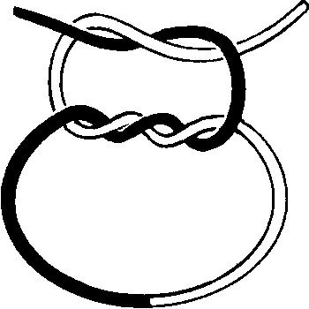
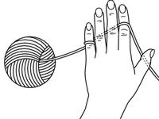
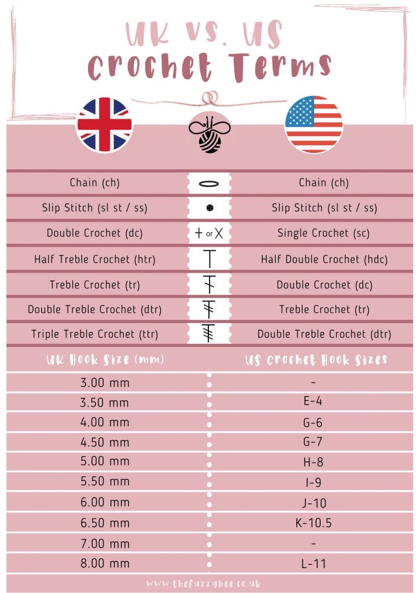
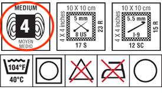

Tips and Tricks
A basic kit starts off with several different sized hooks, small scissors (preferably ones that fold up), different sized needles for weaving in ends or sewing on details, and stitch markers. You do need stitch markers, but I tend to lose mine and, in a pinch, I use bobby pins! Here are all the tips and tricks you could ever use for crocheting and in one convenient place. From magic circles to the invisible finish I am all about my tricks to keep my projects running smoothly. Let’s get started!
 While I do recommend weaving in your ends when finishing a project, the Surgeons Knot is a great finishing knot to end a project. It is very secure and doubled with weaving in ends leaves a project that will last for years to come.
 There are many ways to hold your yarn and there are no right or wrong ways. Hold it however you feel comfortable, the image to the right is just how I feel comfortable. You are just looking to get the right tension for your work.
The Magic Circle, while this is known to give newbies and even veterans grief it is a very handy tool to have in your arsenal.However, using this trick incorrectly can result in your project unraveling! So be wise and start with a long tail and weave the tail through several times tugging to make sure it is secure. In the video she is just using single crochet, but you can magic circle any stitch. I’ve nick named this the X method, so I can always remember how to do it.
The Invisible Finish, I learned this less than a year ago and let me tell you I love it! It gives every project a clean, finished off look that takes any project from an A to an A+.
 Usually if I’ve taken a break from crocheting, I will start to forget some terms meaning the UK vs US terms. Yes, they have different terms! Most patterns will have just one variation, so it is important to remember them which is why I refer to the chart on the left as my reference.
 Have you ever wondered what the yarn, with the number inside, on your label mean? Well look no further, it stands for the yarn weight. This is important if following a pattern, you’ll want a yarn with the same weight so you can achieve the same outcome. No one likes following a pattern and having a lumpy, mishappen mess instead of the picture-perfect example.
Yarn Weights Cheat Sheet |
|||
|---|---|---|---|
| Written | Common Names | Ply | WPI |
| 0 : Lace | Thread | >35 | |
| Coweb | 1 ply | ||
| Lace | 2 ply | Light Fingering/Fingering | 3 ply |
| 1 : Super Fine | Fingering | 3 ply of 4 ply | 19-22 |
| Sock | |||
| Baby | |||
| 2 : Fine | Sport | 4 ply of 5 ply | 15-18 |
| Baby | |||
| 3 : Light | DK(Double Knit) | 8 ply | 12-14 |
| Light Worsted | |||
| 4 : Medium | Worsted | 10 ply or 12 ply | 9-11 |
| Aran | |||
| Triple Kint (rare) | |||
| Fisherman | |||
| Afgahn | |||
| 5 : Bulky | Bulky | 12 ply of 16 ply | 7-8 |
| Chunky | |||
| Craft | |||
| Rug | |||
| Double Double Knit (rare) | |||
| 6 : Super Bulky | Super Bulky | 14 ply | 5-6 |
| Roving | |||
| 7 : Jumbo | Jumbo | 0-4 | |
| Roving | |||